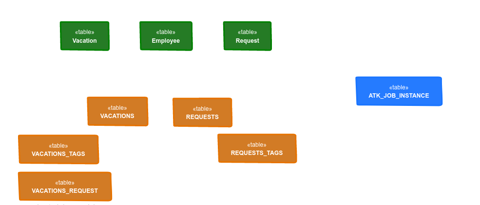

Persistence
Automatiko by default runs without any persistent storage so it can be used without additional components. Though in many cases workflow instances are long lived and thus require storage to persist its state.
Automatiko comes with several options to chose from
-
File system based storage
-
Database based storage
| More is on their way and as soon as they will be implemented they will be listed here. |
File system based storage
The most basic but quite powerful storage option is based on file system. This means each workflow instance will be stored in dedicated file in configured directory.
In addition to file itself, Automatiko will store some metadata that allows to more efficiently look up instances without loading it completely.
Depending on file system capabilities these metadata will be stored as
-
extended file attributes if file system supports it
-
dot filenext to the actual file as a fallback option when file system does not support extended attributes
Configuration
To use file system based perssitence your service must have following dependency
<dependency>
<groupId>io.automatiko.addons</groupId>
<artifactId>automatiko-filesystem-persistence-addon</artifactId>
</dependency>| That each persistence addon comes with job service implementation as well to provide persistency of timers defined in workflows |
Additional configuration should be placed in application.properties
| Property name | Environment variable | Description | Required | Default value | BuildTime only |
|---|---|---|---|---|---|
quarkus.automatiko.persistence.type |
Specify what persistence should be used |
No |
Yes |
||
quarkus.automatiko.persistence.filesystem.path |
QUARKUS_AUTOMATIKO_PERSISTENCE_FILESYSTEM_PATH |
Location on file system that will be used to store persistent state |
Yes |
No |
|
quarkus.automatiko.jobs.type |
Specifies type of jobs implementation to be used |
No |
Yes |
||
quarkus.automatiko.jobs.filesystem.path |
QUARKUS_AUTOMATIKO_JOBS_FILESYSTEM_PATH |
Location on file system where jobs persistent state will be stored |
Yes |
No |
|
quarkus.automatiko.jobs.filesystem.threads |
QUARKUS_AUTOMATIKO_JOBS_FILESYSTEM_THREADS |
Specifies how many threads should be used for jobs execution |
No |
1 |
No |
| This storage option can be used for pretty much any use case but it has certain drawbacks depending on the file system being used. It might not be the best option when horizontal scalability is important. |
Database based storage
Database based storage is mainly dedicated to cover Database record processing
as it requires workflow data objects to be
-
simple types
-
entities
-
collection of entities
Its main applicability is to store workflow state next to the data it is processing.
| Data model of the workflow becomes an entity as well, which on database level will be represented as table. |
Every workflow definition will be stored in dedicated table that is constructed based on workflow identifier and version. The table will also have all simple type data objects in the same table and reference any entity data objects.

Green tables are those defined as data objects and annotated as entities. Orange tables are generated based on workflow definitions
-
vacations is the top level (public) process for handling vacation requests
-
requests is the sub workflow (private) that handles individual request
Blue table is used by jobs service that stores its data in db as well to support persistent timers defined in the workflow.
Data management
Since workflows operate on database records (entities defined as data objects) it has an option to manage these records. One of the important aspects is what should happen to the data after workflow instance completes?
There are two options provided by Automatiko
-
keep the data as they are at workflow instance completion
-
remove data that the workflow instance has worked with
| By default data is not removed at the completion of workflow instance |
Configuration
To use file system based persistence your service must have following dependency
<dependency>
<groupId>io.automatiko.addons</groupId>
<artifactId>automatiko-db-persistence-addon</artifactId>
</dependency>| That each persistence addon comes with job service implementation as well to provide persistency of timers defined in workflows |
Additional configuration should be placed in application.properties
| Property name | Environment variable | Description | Required | Default value | BuildTime only |
|---|---|---|---|---|---|
quarkus.automatiko.persistence.type |
Specify what persistence should be used |
No |
Yes |
||
quarkus.automatiko.persistence.db.remove-at-completion |
Specifies if entities created during instance execution should be removed when instance completes |
No |
false |
Yes |
|
quarkus.automatiko.jobs.db.interval |
QUARKUS_AUTOMATIKO_JOBS_DB_INTERVAL |
Specifies interval (in minutes) how often look for another chunk of jobs to execute |
No |
60 |
No |
quarkus.automatiko.jobs.db.threads |
QUARKUS_AUTOMATIKO_JOBS_DB_THREADS |
Specifies how many threads should be used for job execution |
No |
1 |
No |